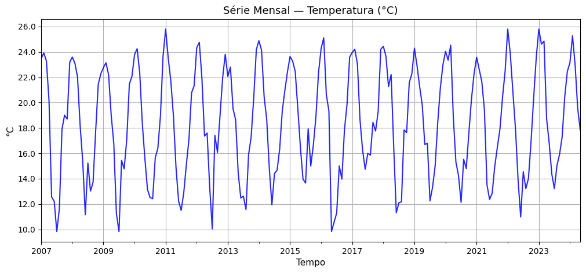
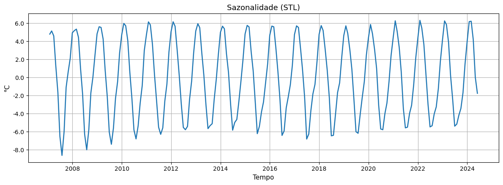
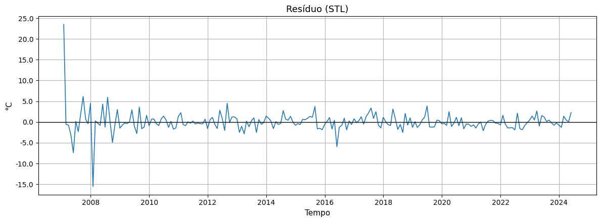

2. SÉRIES TEMPORAIS E AUTOCORRELAÇÃO#
Ouça o resumo do capítulo em áudio:
Uma série temporal é um conjunto de dados organizados na ordem em que foram coletados ao longo do tempo. Em outras palavras, é um registro de como um fenômeno muda de um momento para outro.
O foco não está apenas nos valores em si, mas na evolução desses valores com o passar do tempo.
Podemos imaginar uma série temporal como um “filme” do fenômeno observado: cada ponto de dados é um quadro desse filme, mostrando o que aconteceu em um instante específico. Ao juntar todos os quadros na sequência correta, conseguimos ver o comportamento do fenômeno ao longo do tempo.
Exemplos práticos de séries temporais
Chuvas diárias: registrar, dia após dia, a quantidade de chuva que caiu em uma cidade.
Temperaturas mensais: acompanhar a temperatura média de cada mês em um determinado local.
Contagem de veículos: medir quantos carros passam por uma estrada a cada hora ou a cada dia.
Produção agrícola anual: acompanhar a produção de uma cultura específica a cada safra.
Logo abaixo, podemos visualizar um exemplo real de série temporal para o caso de temperatura mensal. O gráfico mostra a temperatura média mensal registrada ao longo de vários anos pela Estação Climatológica A827 do INMET, localizada no município de Bagé-RS.

Figura 1: Série temporal da temperatura média mensal (°C) – Estação Climatológica A827/INMET, Bagé-RS.
Diferença entre dados transversais (espaciais) e dados temporais
Dados transversais ou espaciais
São dados coletados em vários lugares diferentes, no mesmo momento no tempo.
Exemplo: medir a temperatura hoje em várias cidades de um estado.
Esse tipo de dado mostra como algo varia no espaço, mas não ao longo do tempo.
Dados temporais
São dados coletados ao longo do tempo em um mesmo lugar ou fenômeno.
Exemplo: medir a temperatura ao longo de vários anos em uma única cidade.
Esse tipo de dado mostra como algo varia no tempo, permitindo identificar tendências e padrões.
Em muitas análises de geoprocessamento e ciências ambientais, trabalhamos com os dois tipos ao mesmo tempo (dados espaço-temporais). Entender primeiro as séries temporais é essencial para depois combinar essas dimensões com mapas e informações espaciais.
2.1 Componentes de uma Série Temporal#
Uma série temporal pode parecer apenas uma sequência de números ao longo do tempo, mas por trás dela existem padrões e comportamentos que podemos identificar. Para entender melhor, costumamos “dividir” mentalmente uma série temporal em componentes. Cada componente mostra uma parte diferente do comportamento dos dados.
Esses componentes ajudam a interpretar a série e a preparar análises mais avançadas, como previsões ou detecção de anomalias. Vamos conhecer os principais:
a) Tendência
A tendência mostra se, ao longo do tempo, os valores estão aumentando, diminuindo ou permanecendo estáveis.
Exemplo: a média das temperaturas anuais de uma cidade pode estar subindo gradualmente por conta das mudanças climáticas.
Ao identificar a tendência, conseguimos ver o comportamento geral do fenômeno, sem nos perder nas variações do dia a dia.

Figura 2: Tendência (STL) da série temporal – Estação Climatológica A827/INMET, Bagé-RS.
b) Sazonalidade
A sazonalidade representa padrões que se repetem regularmente em intervalos de tempo previsíveis. Exemplo: aumento das vendas no comércio no final do ano; maior quantidade de chuvas no verão.
São variações ligadas a fatores como estações do ano, meses, dias da semana ou horários do dia.
Reconhecer a sazonalidade é útil para diferenciar o que é um padrão normal do que é uma variação atípica.

Figura 3: Sazonalidade (STL) da série temporal – Estação Climatológica A827/INMET, Bagé-RS.
c) Ciclos
Os ciclos também são variações ao longo do tempo, mas não têm intervalos fixos como a sazonalidade. Exemplo: períodos de crescimento e retração na economia, que podem durar anos e não seguem um calendário definido.
São movimentos de médio ou longo prazo, mais difíceis de prever.
Em resumo
Sazonalidade = padrões regulares, repetitivos.
Ciclos = padrões de longo prazo, sem regularidade fixa.
(Neste exemplo, os ciclos de longo prazo estão embutidos no gráfico de tendência. Eles podem aparecer como oscilações suaves ao longo dos anos.)
d) Ruído (ou irregularidade)
O ruído é a parte da série que não segue nenhum padrão aparente. São as variações aleatórias, provocadas por fatores imprevisíveis ou erros de medição. Exemplo: um dia chuvoso inesperado em meio a uma semana seca; uma falha de sensor.
Embora o ruído seja inevitável, ele pode ser reduzido ou filtrado em análises para que possamos ver mais claramente os outros componentes.

Figura 4: Resíduo (ruído) da série temporal – Estação Climatológica A827/INMET, Bagé-RS.
Por que separar os componentes?
Ao separar tendência, sazonalidade, ciclos e ruído, conseguimos:
Compreender melhor o comportamento do fenômeno.
Prever valores futuros com mais precisão.
Detectar anomalias (algo fora do padrão).
Essa visão mais detalhada é a base para qualquer estudo de séries temporais, inclusive quando integramos dados espaciais (em mapas) e temporais ao mesmo tempo.
2.2 Preparação dos Dados Temporais#
Antes de começar qualquer análise, é essencial organizar os dados. Essa etapa é chamada de preparação dos dados temporais. Ela garante que as informações estejam no formato certo, completas e bem estruturadas para que possamos aplicar gráficos, cálculos e métodos de análise sem erros.
Podemos imaginar essa fase como arrumar a mesa de trabalho antes do projeto: se tudo estiver organizado, o trabalho flui muito mais rápido e os resultados ficam mais confiáveis.
Como estamos fazendo isso no notebook
a) Imports e estilo
O código começa importando as bibliotecas que serão usadas ao longo do capítulo (pandas, numpy, matplotlib, statsmodels etc.) e configurando parâmetros de estilo para que os gráficos fiquem com aparência consistente.
from IPython.display import display, Markdown, HTML
from matplotlib.ticker import FormatStrFormatter
from statsmodels.graphics.tsaplots import plot_acf, plot_pacf
from statsmodels.tsa.seasonal import STL, seasonal_decompose
from statsmodels.tsa.holtwinters import ExponentialSmoothing
from statsmodels.tsa.statespace.sarimax import SARIMAX
from statsmodels.stats.diagnostic import acorr_ljungbox
import statsmodels.api as sm
from sklearn.metrics import mean_squared_error
import itertools
import numpy as np
import pandas as pd
import matplotlib.pyplot as plt
import base64
from io import BytesIO
plt.rcParams["figure.figsize"] = (12, 5)
plt.rcParams["axes.grid"] = True
plt.rcParams["axes.titlesize"] = 13
plt.rcParams["axes.labelsize"] = 11
(As funções auxiliares serão apresentadas conforme forem utilizadas nas próximas seções para facilitar a compreensão.)
b) Carregamento e organização das datas
Os dados da série histórica foram embutidos diretamente no código em formato Base64, evitando a necessidade de download de arquivos externos.
O bloco de código decodifica essa string Base64 e monta o DataFrame com os mesmos parâmetros do arquivo original:
o separador
;a conversão da coluna
"Data"paradatetime(utilizada como índice)e o separador decimal como vírgula
# Conteúdo Base64 do CSV
csv_base64 = """
RGF0YTtUZW1wTWVuc2FsCjIwMDctMDEtMzE7MjMsNQoyMDA3LTAyLTI4OzIzLDkxMjUKMjAwNy0wMy0zMTsyMywyNzQxOTM1NDgzODcwOTYKMjAwNy0wNC0zMDsyMCwxNTMzMzMzMzMzMzMzMwoyMDA3LTA1LTMxOzEyLDU1NDgzODcwOTY3NzQyCjIwMDctMDYtMzA7MTIsMjExNjY2NjY2NjY2NjY4CjIwMDctMDctMzE7OSw4MzE1OTY3NzQxOTM1NDgKMjAwNy0wOC0zMTsxMSw2MzcwOTY3NzQxOTM1NDgKMjAwNy0wOS0zMDsxNyw4ODY2NjY2NjY2NjY2NjcKMjAwNy0xMC0zMTsxOSwwMDQ4Mzg3MDk2Nzc0MgoyMDA3LTExLTMwOzE4LDcwMTY2NjY2NjY2NjY2NAoyMDA3LTEyLTMxOzIzLDE4ODcwOTY3NzQxOTM2CjIwMDgtMDEtMzE7MjMsNTkxOTM1NDgzODcwOTcKMjAwOC0wMi0yOTsyMywwOTQ4Mjc1ODYyMDY4OTcKMjAwOC0wMy0zMTsyMiwwMjU4MDY0NTE2MTI5CjIwMDgtMDQtMzA7MTgsMjA1CjIwMDgtMDUtMzE7MTUsMzc5MDMyMjU4MDY0NTE2CjIwMDgtMDYtMzA7MTEsMTU1CjIwMDgtMDctMzE7MTUsMjI5ODM4NzA5Njc3NDIKMjAwOC0wOC0zMTsxMywwMTQ1MTYxMjkwMzIyNTYKMjAwOC0wOS0zMDsxMyw3MTgzMzMzMzMzMzMzMzQKMjAwOC0xMC0zMTsxNyw3NTE2MTI5MDMyMjU4MDUKMjAwOC0xMS0zMDsyMSw0NDE2NjY2NjY2NjY2NjMKMjAwOC0xMi0zMTsyMiwyNzc0MTkzNTQ4Mzg3MQoyMDA5LTAxLTMxOzIyLDc1OTY3NzQxOTM1NDg0CjIwMDktMDItMjg7MjMsMTQ4MjE0Mjg1NzE0Mjg1CjIwMDktMDMtMzE7MjIsMTcwOTY3NzQxOTM1NDgKMjAwOS0wNC0zMDsxOCw5OTE2NjY2NjY2NjY2NjcKMjAwOS0wNS0zMTsxNiw3NDgzODcwOTY3NzQxOTUKMjAwOS0wNi0zMDsxMSwyNDgzMzMzMzMzMzMzMzEKMjAwOS0wNy0zMTs5LDgzMTU5Njc3NDE5MzU0OAoyMDA5LTA4LTMxOzE1LDQzODcwOTY3NzQxOTM1NgoyMDA5LTA5LTMwOzE0LDc2ODMzMzMzMzMzMzMzNAoyMDA5LTEwLTMxOzE3LDEwOTY3NzQxOTM1NDg0CjIwMDktMTEtMzA7MjEsNDU2NjY2NjY2NjY2NjY3CjIwMDktMTItMzE7MjIsMDY5MzU0ODM4NzA5NjgKMjAxMC0wMS0zMTsyMyw3NzU4MDY0NTE2MTI5CjIwMTAtMDItMjg7MjQsMjUKMjAxMC0wMy0zMTsyMiwzNTY0NTE2MTI5MDMyMjUKMjAxMC0wNC0zMDsxOCwzNTMzMzMzMzMzMzMzMwoyMDEwLTA1LTMxOzE1LDU2MjkwMzIyNTgwNjQ1MQoyMDEwLTA2LTMwOzEzLDE0MTY2NjY2NjY2NjY2NwoyMDEwLTA3LTMxOzEyLDUwODA2NDUxNjEyOTAzMgoyMDEwLTA4LTMxOzEyLDQyNDE5MzU0ODM4NzA5OAoyMDEwLTA5LTMwOzE1LDY0ODMzMzMzMzMzMzMzMgoyMDEwLTEwLTMxOzE2LDQKMjAxMC0xMS0zMDsxOCw5NjMzMzMzMzMzMzMzMwoyMDEwLTEyLTMxOzIzLDY1NjQ1MTYxMjkwMzIyNgoyMDExLTAxLTMxOzI1LDgwMDIwNjg5NjU1MTcyOAoyMDExLTAyLTI4OzIzLDUxMDcxNDI4NTcxNDI4MwoyMDExLTAzLTMxOzIxLDcwODA2NDUxNjEyOTAzNQoyMDExLTA0LTMwOzE4LDk2NjY2NjY2NjY2NjY2NQoyMDExLTA1LTMxOzE0LDg4MDY0NTE2MTI5MDMyNQoyMDExLTA2LTMwOzEyLDIyMzMzMzMzMzMzMzMzMwoyMDExLTA3LTMxOzExLDQ5NTE2MTI5MDMyMjU4CjIwMTEtMDgtMzE7MTIsOTAzMjI1ODA2NDUxNjEyCjIwMTEtMDktMzA7MTUsMTE2NjY2NjY2NjY2NjY3CjIwMTEtMTAtMzE7MTcsMTAzMjI1ODA2NDUxNjE1CjIwMTEtMTEtMzA7MjAsNzcKMjAxMS0xMi0zMTsyMSwzMjkwMzIyNTgwNjQ1MgoyMDEyLTAxLTMxOzI0LDMyNTgwNjQ1MTYxMjkwNQoyMDEyLTAyLTI5OzI0LDc0NjU1MTcyNDEzNzkzCjIwMTItMDMtMzE7MjEsOTE5MzU0ODM4NzA5NjgKMjAxMi0wNC0zMDsxNywzNTgzMzMzMzMzMzMzMzQKMjAxMi0wNS0zMTsxNyw1OTY3NzQxOTM1NDgzODgKMjAxMi0wNi0zMDsxMywzMgoyMDEyLTA3LTMxOzEwLDAzNzA5Njc3NDE5MzU0OAoyMDEyLTA4LTMxOzE3LDQxOTM1NDgzODcwOTY3NgoyMDEyLTA5LTMwOzE2LDA3MTY2NjY2NjY2NjY2NQoyMDEyLTEwLTMxOzE5LDAxOTM1NDgzODcwOTY4CjIwMTItMTEtMzA7MjEsOTYKMjAxMi0xMi0zMTsyMyw4MTI5MDMyMjU4MDY0NQoyMDEzLTAxLTMxOzIyLDA2MTI5MDMyMjU4MDY0MwoyMDEzLTAyLTI4OzIyLDc5ODIxNDI4NTcxNDI4OAoyMDEzLTAzLTMxOzE5LDUyMDk2Nzc0MTkzNTQ4MwoyMDEzLTA0LTMwOzE4LDY1NQoyMDEzLTA1LTMxOzE0LDQ0MTkzNTQ4Mzg3MDk2NwoyMDEzLTA2LTMwOzEyLDQ3CjIwMTMtMDctMzE7MTIsNjE2MTI5MDMyMjU4MDY0CjIwMTMtMDgtMzE7MTEsNTY3NzQxOTM1NDgzODcyCjIwMTMtMDktMzA7MTUsODgxNjY2NjY2NjY2NjY2CjIwMTMtMTAtMzE7MTcsMzA0ODM4NzA5Njc3NDIKMjAxMy0xMS0zMDsyMCw0MQoyMDEzLTEyLTMxOzI0LDE4MjI1ODA2NDUxNjEyNwoyMDE0LTAxLTMxOzI0LDg4NTQ4Mzg3MDk2Nzc0MwoyMDE0LTAyLTI4OzI0LDEzNzUKMjAxNC0wMy0zMTsyMCw0NzQxOTM1NDgzODcxCjIwMTQtMDQtMzA7MTgsNjYzMzMzMzMzMzMzMzMKMjAxNC0wNS0zMTsxNCw4MTEyOTAzMjI1ODA2NDQKMjAxNC0wNi0zMDsxMSw5MzkxNjY2NjY2NjY2NjkKMjAxNC0wNy0zMTsxNCw0MDgwNjQ1MTYxMjkwMzQKMjAxNC0wOC0zMTsxNCw2NjEyOTAzMjI1ODA2NDYKMjAxNC0wOS0zMDsxNiwzMzMzMzMzMzMzMzMzMzIKMjAxNC0xMC0zMTsxOSwzMjA5Njc3NDE5MzU0ODcKMjAxNC0xMS0zMDsyMCw5NDUKMjAxNC0xMi0zMTsyMiw0MTkzNTQ4Mzg3MDk2OAoyMDE1LTAxLTMxOzIzLDYyOTAzMjI1ODA2NDUyCjIwMTUtMDItMjg7MjMsMjcxNDI4NTcxNDI4NTcKMjAxNS0wMy0zMTsyMiw0NTMyMjU4MDY0NTE2MTMKMjAxNS0wNC0zMDsxOSw1NDE2NjY2NjY2NjY2NjgKMjAxNS0wNS0zMTsxNiw0NzU4MDY0NTE2MTI5MDQKMjAxNS0wNi0zMDsxMyw5NwoyMDE1LTA3LTMxOzEzLDY1NDgzODcwOTY3NzQyCjIwMTUtMDgtMzE7MTcsOTI5MDMyMjU4MDY0NTEzCjIwMTUtMDktMzA7MTUsMAoyMDE1LTEwLTMxOzE2LDY1OTY3NzQxOTM1NDg0CjIwMTUtMTEtMzA7MTgsOTE4MzMzMzMzMzMzMzMzCjIwMTUtMTItMzE7MjIsMzc1ODA2NDUxNjEyOTAyCjIwMTYtMDEtMzE7MjQsMjY2MTI5MDMyMjU4MDY0CjIwMTYtMDItMjk7MjUsMTA4NjIwNjg5NjU1MTcKMjAxNi0wMy0zMTsyMCw2MjU4MDY0NTE2MTI5MDIKMjAxNi0wNC0zMDsxOSwzNDA3ODY1MTY4NTM5MwoyMDE2LTA1LTMxOzksODMxNTk2Nzc0MTkzNTQ4CjIwMTYtMDctMzE7MTEsMjg4NTUzMzcwNzg2NTE2CjIwMTYtMDgtMzE7MTUsMDA2NDUxNjEyOTAzMjIzCjIwMTYtMDktMzA7MTMsOTY1CjIwMTYtMTAtMzE7MTcsODU2NDUxNjEyOTAzMjI1CjIwMTYtMTEtMzA7MTksODg2NjY2NjY2NjY2NjY3CjIwMTYtMTItMzE7MjMsNTg1NDgzODcwOTY3NzQyCjIwMTctMDEtMzE7MjMsOTU5Njc3NDE5MzU0ODQKMjAxNy0wMi0yODsyNCwyMDM1NzE0Mjg1NzE0MwoyMDE3LTAzLTMxOzIzLDA1CjIwMTctMDQtMzA7MTgsNjMxNjY2NjY2NjY2NjY4CjIwMTctMDUtMzE7MTYsMjQ2Nzc0MTkzNTQ4Mzg2CjIwMTctMDYtMzA7MTQsNzM2NjY2NjY2NjY2NjY4CjIwMTctMDctMzE7MTUsOTk1MTYxMjkwMzIyNTgKMjAxNy0wOC0zMTsxNSw4NTY0NTE2MTI5MDMyMjgKMjAxNy0wOS0zMDsxOCw0MzgzMzMzMzMzMzMzMzMKMjAxNy0xMC0zMTsxNyw3NTE2MTI5MDMyMjU4MDUKMjAxNy0xMS0zMDsxOSwyODMzMzMzMzMzMzMzMwoyMDE3LTEyLTMxOzI0LDIwMzIyNTgwNjQ1MTYxMwoyMDE4LTAxLTMxOzI0LDQzODcwOTY3NzQxOTM2CjIwMTgtMDItMjg7MjMsNjY2MDcxNDI4NTcxNDI4CjIwMTgtMDMtMzE7MjEsMjYyOTAzMjI1ODA2NDUKMjAxOC0wNC0zMDsyMiwyMDgzMzMzMzMzMzMzMwoyMDE4LTA1LTMxOzE2LDUyMDk2Nzc0MTkzNTQ4MwoyMDE4LTA2LTMwOzExLDMxMTY2NjY2NjY2NjY2NwoyMDE4LTA3LTMxOzEyLDA5Njc3NDE5MzU0ODM4OAoyMDE4LTA4LTMxOzEyLDE3MjU4MDY0NTE2MTI5MQoyMDE4LTA5LTMwOzE3LDg0CjIwMTgtMTAtMzE7MTcsNjM3MDk2Nzc0MTkzNTQ4CjIwMTgtMTEtMzA7MjEsNTgKMjAxOC0xMi0zMTsyMiwyNjYxMjkwMzIyNTgwNjQKMjAxOS0wMS0zMTsyNCwyODg3MDk2Nzc0MTkzNTUKMjAxOS0wMi0yODsyMiw5MTI1CjIwMTktMDMtMzE7MjEsMjg4NzA5Njc3NDE5MzU1CjIwMTktMDQtMzA7MTksODQ2NjY2NjY2NjY2NjY4CjIwMTktMDUtMzE7MTYsNjkzNTQ4Mzg3MDk2Nzc2CjIwMTktMDYtMzA7MTYsNzkKMjAxOS0wNy0zMTsxMiwyNDUxNjEyOTAzMjI1OAoyMDE5LTA4LTMxOzEzLDMyNTgwNjQ1MTYxMjkwNAoyMDE5LTA5LTMwOzE1LDAxNjY2NjY2NjY2NjY2NwoyMDE5LTEwLTMxOzE4LDQ1MTYxMjkwMzIyNTgwOAoyMDE5LTExLTMwOzIxLDE1NQoyMDE5LTEyLTMxOzIyLDk4Mzg3MDk2Nzc0MTkzNgoyMDIwLTAxLTMxOzI0LDA0NTE2MTI5MDMyMjU4CjIwMjAtMDItMjk7MjMsMzQ0ODI3NTg2MjA2ODk3CjIwMjAtMDMtMzE7MjQsNTI3NDE5MzU0ODM4NzEKMjAyMC0wNC0zMDsxOCw4NzE2NjY2NjY2NjY2NjMKMjAyMC0wNS0zMTsxNSwzMTc3NDE5MzU0ODM4NzIKMjAyMC0wNi0zMDsxNCwyNDY2NjY2NjY2NjY2NjYKMjAyMC0wNy0zMTsxMiwxMzM4NzA5Njc3NDE5MzYKMjAyMC0wOC0zMTsxNSw1MjA5Njc3NDE5MzU0ODQKMjAyMC0wOS0zMDsxNCw3OTUKMjAyMC0xMC0zMTsxNyw1ODU0ODM4NzA5Njc3NDIKMjAyMC0xMS0zMDsyMCwyNTE2NjY2NjY2NjY2NjUKMjAyMC0xMi0zMTsyMiwyNTgwNjQ1MTYxMjkwMzIKMjAyMS0wMS0zMTsyMyw1ODA2NDUxNjEyOTAzMjQKMjAyMS0wMi0yODsyMiw2MDcxNDI4NTcxNDI4NTgKMjAyMS0wMy0zMTsyMSw2NTY0NTE2MTI5MDMyMjYKMjAyMS0wNC0zMDsxOSw0MzY2NjY2NjY2NjY2NjcKMjAyMS0wNS0zMTsxMyw1MTEyOTAzMjI1ODA2NDYKMjAyMS0wNi0zMDsxMiwzNgoyMDIxLTA3LTMxOzEyLDg0ODM4NzA5Njc3NDE5NgoyMDIxLTA4LTMxOzE0LDk3NzQxOTM1NDgzODcxCjIwMjEtMDktMzA7MTYsNDg1CjIwMjEtMTAtMzE7MTcsOTE3NzQxOTM1NDgzODcKMjAyMS0xMS0zMDsyMCw0MjUKMjAyMS0xMi0zMTsyMiw0OTE5MzU0ODM4NzA5NjgKMjAyMi0wMS0zMTsyNSw4MDAyMDY4OTY1NTE3MjgKMjAyMi0wMi0yODsyMyw4MjMyMTQyODU3MTQyODMKMjAyMi0wMy0zMTsyMCw4MjA5Njc3NDE5MzU0ODcKMjAyMi0wNC0zMDsxNyw5MDE2NjY2NjY2NjY2NjQKMjAyMi0wNS0zMTsxMyw4ODU0ODM4NzA5Njc3NAoyMDIyLTA2LTMwOzEwLDk3NjY2NjY2NjY2NjY2OAoyMDIyLTA3LTMxOzE0LDU0MzU0ODM4NzA5Njc3NQoyMDIyLTA4LTMxOzEzLDIxMTI5MDMyMjU4MDY0NQoyMDIyLTA5LTMwOzE0LDAyMzMzMzMzMzMzMzMzMgoyMDIyLTEwLTMxOzE2LDkzNTQ4Mzg3MDk2Nzc0CjIwMjItMTEtMzA7MjAsMzQ2NjY2NjY2NjY2NjY4CjIwMjItMTItMzE7MjMsNTMyMjU4MDY0NTE2MTI4CjIwMjMtMDEtMzE7MjUsODAwMjA2ODk2NTUxNzI4CjIwMjMtMDItMjg7MjQsNjA4OTI4NTcxNDI4NTcKMjAyMy0wMy0zMTsyNCw4NDE5MzU0ODM4NzA5NwoyMDIzLTA0LTMwOzE4LDc0NjY2NjY2NjY2NjY2MwoyMDIzLTA1LTMxOzE2LDc5ODM4NzA5Njc3NDE5MgoyMDIzLTA2LTMwOzE0LDM3MTY2NjY2NjY2NjY2OAoyMDIzLTA3LTMxOzEzLDIwNDgzODcwOTY3NzQyCjIwMjMtMDgtMzE7MTUsMDQxOTM1NDgzODcwOTY5CjIwMjMtMDktMzA7MTUsOTE4MzMzMzMzMzMzMzMxCjIwMjMtMTAtMzE7MTcsMjk1MTYxMjkwMzIyNTgKMjAyMy0xMS0zMDsyMCw0NjE2NjY2NjY2NjY2NjIKMjAyMy0xMi0zMTsyMiw0NTgwNjQ1MTYxMjkwMzUKMjAyNC0wMS0zMTsyMywxNDY3NzQxOTM1NDgzODUKMjAyNC0wMi0yOTsyNSwyNjcyNDEzNzkzMTAzNDUKMjAyNC0wMy0zMTsyMiw5ODM4NzA5Njc3NDE5MzYKMjAyNC0wNC0zMDsxOSw1NDUKMjAyNC0wNS0zMTsxNyw3OTU0NTQ1NDU0NTQ1NDcK
"""
# Decodifica o Base64 em bytes
csv_bytes = base64.b64decode(csv_base64)
# Lê o DataFrame a partir dos bytes, com os mesmos parâmetros que você usava
mensal = (
pd.read_csv(
BytesIO(csv_bytes),
sep=";", # separador ponto e vírgula
decimal=",", # vírgula como separador decimal
parse_dates=["Data"]
)
.set_index("Data")
.sort_index()
)
# Espia as primeiras linhas
mensal.head()
| TempMensal | |
|---|---|
| Data | |
| 2007-01-31 | 23.500000 |
| 2007-02-28 | 23.912500 |
| 2007-03-31 | 23.274194 |
| 2007-04-30 | 20.153333 |
| 2007-05-31 | 12.554839 |
c) Deduplicação, grade mensal contínua e interpolação curta
Depois garantimos que:
as datas estão em ordem cronológica
datas duplicadas são removidas
a série é reindexada numa grade mensal contínua (
freq="ME") e eventuais lacunas de até 2 meses são interpoladas
# capture quantas datas duplicadas vieram na carga original
dups_n = mensal.index.duplicated().sum()
# remove duplicatas de datas (se houver)
mensal = mensal[~mensal.index.duplicated(keep="first")]
# Série base e grade mensal contínua ('ME')
serie = mensal["TempMensal"].astype(float)
full_idx = pd.date_range(serie.index.min(), serie.index.max(), freq="ME")
y = serie.reindex(full_idx).interpolate(limit=2).dropna() # até 2 lacunas consecutivas
y.name = "TempMensal" # nome amigável
# Mostra o índice inicial/final e tamanho
(y.index.min(), y.index.max(), len(y))
(Timestamp('2007-01-31 00:00:00'), Timestamp('2024-05-31 00:00:00'), 209)
No fim desse bloco temos a série y — a nossa série temporal já limpa e pronta para análises.
d) Ficha descritiva dos dados
O bloco seguinte monta uma pequena “ficha técnica” com:
período coberto
frequência esperada
número de observações
percentual de faltantes
estatísticas básicas (mínimo, média, mediana, máximo, desvio-padrão)
O código também imprime mensagens automáticas sobre meses faltantes e duplicatas. Isso ajuda a verificar se os dados estão íntegros antes de começar a análise.
# Ficha descritiva
inicio, fim = y.index.min(), y.index.max()
n_obs, n_na = y.shape[0], y.isna().sum()
pct_na = 100 * n_na / (n_obs + n_na)
# meses faltantes após a grade
buracos = pd.date_range(inicio, fim, freq="ME").difference(y.index)
ficha = pd.DataFrame({
"Período coberto": [f"{inicio.date()} → {fim.date()}"],
"Frequência (esperada)": ["Mensal (ME)"],
"Observações (não nulas)": [n_obs],
"Faltantes (%)": [round(pct_na, 2)],
"Mín": [round(y.min(), 2)],
"Média": [round(y.mean(), 2)],
"Mediana": [round(y.median(), 2)],
"Máx": [round(y.max(), 2)],
"Desvio-padrão": [round(y.std(ddof=1), 2)]
})
display(ficha)
print(
"✓ Sem meses faltantes no período coberto."
if len(buracos)==0
else f"⚠ Meses faltantes: {len(buracos)} (ex.: {pd.Index(buracos[:3]).strftime('%Y-%m').tolist()} ...)"
)
if dups_n > 0:
print(f"⚠ Havia {dups_n} datas duplicadas na carga original (mantivemos a primeira).")
| Período coberto | Frequência (esperada) | Observações (não nulas) | Faltantes (%) | Mín | Média | Mediana | Máx | Desvio-padrão | |
|---|---|---|---|---|---|---|---|---|---|
| 0 | 2007-01-31 → 2024-05-31 | Mensal (ME) | 209 | 0.0 | 9.83 | 18.44 | 18.63 | 25.8 | 4.3 |
✓ Sem meses faltantes no período coberto.
O que observar:
Período coberto: 17 anos completos de dados, o que permite análises de tendência e sazonalidade confiáveis.
Unidade de medida: graus Celsius.
Completude: não há dados faltantes após a preparação.
Variação: valores mínimos próximos de 10 °C e máximos próximos de 26 °C.
e) Verificação inicial com gráficos simples
Para conhecer melhor os dados, mostramos três visualizações básicas:
Histograma (distribuição)
plt.figure(figsize=(12,4.5))
plt.hist(y.values, bins=20, edgecolor="black", alpha=0.8)
plt.title("Distribuição das temperaturas mensais")
plt.xlabel("°C"); plt.ylabel("Frequência"); plt.grid(True, axis="y")
plt.show()
Interpretação: o histograma mostra como os valores se concentram entre 15 °C e 24 °C, com poucas observações em extremos (abaixo de 12 °C e acima de 25 °C). Isso indica um regime térmico relativamente estável, mas com amplitude suficiente para estudos de sazonalidade.
Climatologia mensal (média por mês)
clima = pd.DataFrame({"TempMensal": y})
clima["mes"] = clima.index.month
mmap = clima.groupby("mes")["TempMensal"].mean().reindex(range(1,13))
plt.figure(figsize=(12,4.5))
plt.bar(mmap.index, mmap.values)
plt.title("Climatologia mensal (média por mês)")
plt.xlabel("Mês"); plt.ylabel("°C"); plt.grid(True, axis="y")
plt.xticks(range(1,13), ['Jan','Fev','Mar','Abr','Mai','Jun','Jul','Ago','Set','Out','Nov','Dez'])
plt.show()
Interpretação: fica evidente a sazonalidade anual — verões mais quentes (dez–fev) e invernos mais frios (jun–jul). Essa informação é essencial para a decomposição da série em tendência e sazonalidade.
Boxplot por mês
plt.figure(figsize=(12,5))
clima.boxplot(column="TempMensal", by="mes")
plt.title("Distribuição mensal (°C)"); plt.suptitle("")
plt.xlabel("Mês"); plt.ylabel("°C")
plt.xticks(range(1,13), ['Jan','Fev','Mar','Abr','Mai','Jun','Jul','Ago','Set','Out','Nov','Dez'])
plt.grid(True, axis="y")
plt.show()
<Figure size 1200x500 with 0 Axes>
Interpretação: o boxplot detalha a dispersão mês a mês. Nota-se maior variação em meses de transição (maio, setembro) e valores mais concentrados nos meses de inverno. Alguns outliers podem aparecer, refletindo episódios atípicos de calor ou frio.
Resumo do Diagnóstico
Insights do Diagnóstico
Período coberto: 2007–2024, série mensal completa (≈209 observações, 0% faltantes).
Temperaturas entre ~9,8 °C e ~25,8 °C, média ~18,4 °C.
Sazonalidade anual forte: verões quentes (dez–fev) e invernos frios (jun–jul).
Distribuição estável, poucos outliers — dados ideais para decomposição e previsão.
Pronto para análise: dados limpos, padronizados e com frequência bem definida.
Com os dados bem preparados, conseguimos:
Visualizar a série temporal de forma clara.
Aplicar métodos de análise sem precisar corrigir erros no meio do caminho.
Garantir que as conclusões tiradas sejam confiáveis e reproduzíveis.
Esse diagnóstico prepara o terreno para as próximas seções, onde será feita a decomposição formal da série e a identificação quantitativa de sazonalidade e tendência.
2.3 Visualização inicial da série temporal#
Nesta seção vamos visualizar a série temporal em um gráfico e aprender a fazer uma leitura básica: compreender o eixo do tempo, o eixo dos valores e reconhecer padrões visuais, como picos, vales e repetições sazonais.
Como plotamos a série (o que o código faz)
O bloco abaixo desenha o gráfico da série mensal de temperatura:
# Visualização inicial
ax = y.plot(color='blue', alpha=0.85)
ax.set_title('Série Mensal — Temperatura (°C)')
ax.set_xlabel('Tempo'); ax.set_ylabel('°C')
ax.yaxis.set_major_formatter(FormatStrFormatter('%.1f'))
plt.show()
Como ler o gráfico (leituras básicas)
Eixo do tempo (X): vai da esquerda (2007) para a direita (2024). Cada ponto da linha representa um mês. É possível perceber repetições anuais (um ciclo por ano).
Eixo dos valores (Y): mostra a temperatura em °C. A escala está aproximadamente entre 10 °C e 26 °C, indicando a amplitude típica da série.
Linha da série: picos (valores altos) e vales (valores baixos) se repetem ano a ano. A espessura e a continuidade da linha ajudam a ver a trajetória mês a mês.
Observação inicial de padrões (o que já dá para concluir)
Sazonalidade forte: há um padrão anual claro de picos no verão e vales no inverno (a linha sobe e desce em ondas regulares a cada ano).
Tendência de longo prazo pouco marcada: a altura média da série não parece subir ou descer de forma persistente ao longo dos 17 anos — isso será confirmado na decomposição.
Amplitude sazonal moderada: a maior parte dos valores fica entre ~10–26 °C, coerente com o clima local.
Possíveis episódios atípicos: alguns pontos fogem do “desenho” esperado (por exemplo, mínimos muito baixos ou máximos muito altos em certos anos); mais adiante investigaremos isso como anomalias.
Com essa leitura inicial, já sabemos o que a série “parece dizer”. Nas próximas seções, vamos quantificar essas percepções com decomposição (tendência, sazonalidade e ruído) e, depois, explorar médias móveis e autocorrelação para descrever melhor os padrões.
2.4 Decomposição de Séries Temporais#
Quando observamos uma série temporal, vemos apenas uma linha única que sobe e desce ao longo do tempo. No entanto, por trás desse traçado existem padrões diferentes acontecendo simultaneamente.
A decomposição é a técnica que nos permite separar essa linha em três componentes básicos — tendência, sazonalidade e resíduo — para entender com mais clareza o comportamento dos dados.
No gráfico abaixo, a série mensal de temperatura da Estação Climatológica A827/INMET (Bagé-RS) foi decomposta pelo método STL. O resultado aparece em quatro painéis: a série original, a tendência de longo prazo, a sazonalidade anual e o resíduo (o que sobra após retirar tendência e sazonalidade).
# Decomposição (STL) + Força Sazonal
stl = STL(y, period=12, robust=True).fit()
trend, seasonal, resid = stl.trend, stl.seasonal, stl.resid
# força sazonal = 1 - var(resid) / (var(resid) + var(seasonal))
var_res = np.var(resid.dropna(), ddof=1)
var_sea = np.var(seasonal.dropna(), ddof=1)
forca_sazonal = (1 - var_res/(var_res + var_sea)) if (var_res + var_sea) > 0 else np.nan
print(f"Força sazonal (0–1): {forca_sazonal:.2f}")
fig, axes = plt.subplots(4, 1, figsize=(12, 9), sharex=True)
axes[0].plot(y, color='black'); axes[0].set_title('Original')
axes[1].plot(trend, linewidth=2); axes[1].set_title('Tendência (STL)')
axes[2].plot(seasonal); axes[2].set_title('Sazonalidade (STL)')
axes[3].plot(resid); axes[3].set_title('Resíduo (STL)')
axes[-1].set_xlabel('Tempo')
plt.tight_layout(); plt.show()
Força sazonal (0–1): 0.92
Como interpretar cada painel
Série Original: mostra os valores mensais tal como foram observados. É possível perceber, a olho nu, ondas regulares correspondentes às estações do ano.
Tendência (STL): destaca o movimento suave de longo prazo. No nosso caso, a temperatura média mensal oscila entre aproximadamente 17,7 °C e 19 °C ao longo dos anos, sem uma subida ou descida persistente. Isso indica que, embora haja pequenas flutuações multianuais, não há uma tendência forte e constante no período analisado.
Sazonalidade (STL): revela o padrão que se repete a cada 12 meses: picos positivos no verão (dezembro a fevereiro) e valores negativos no inverno (junho e julho). A amplitude é de cerca de ±5 °C, coerente com o clima local. Essa componente explica a maior parte das variações mensais da série.
Resíduo (STL): representa as variações que não se enquadram nem na tendência nem na sazonalidade. Os valores oscilam em torno de zero e mostram picos isolados — meses excepcionalmente quentes ou frios, falhas de medição ou outros eventos atípicos. É aqui que se concentram as “anomalias” da série.
O cálculo adicional feito no notebook — a força sazonal — fornece um número entre 0 e 1 que indica o peso da sazonalidade. Valores próximos de 1 significam sazonalidade muito forte. Para esta série, a força sazonal está em torno de 0,9, confirmando que o padrão anual domina os dados.
A decomposição na prática (tabela)
Além dos gráficos, o notebook mostra uma tabela com as colunas TempMensal (Série), Tendência, Sazonalidade e Resíduo:
# Decomposição clássica — “tabelinha vitrine”
decomp_add = seasonal_decompose(y, model='additive', period=12, extrapolate_trend='freq')
display(pd.DataFrame({
'TempMensal': y,
'Tendência': decomp_add.trend,
'Sazonalidade': decomp_add.seasonal,
'Resíduo': decomp_add.resid
}).round(3).head(12))
| TempMensal | Tendência | Sazonalidade | Resíduo | |
|---|---|---|---|---|
| 2007-01-31 | 23.500 | 17.718 | 5.710 | 0.072 |
| 2007-02-28 | 23.912 | 17.742 | 5.401 | 0.770 |
| 2007-03-31 | 23.274 | 17.765 | 3.649 | 1.860 |
| 2007-04-30 | 20.153 | 17.789 | 0.680 | 1.684 |
| 2007-05-31 | 12.555 | 17.812 | -3.120 | -2.138 |
| 2007-06-30 | 12.212 | 17.836 | -5.594 | -0.031 |
| 2007-07-31 | 9.832 | 17.992 | -5.780 | -2.380 |
| 2007-08-31 | 11.637 | 17.962 | -4.127 | -2.197 |
| 2007-09-30 | 17.887 | 17.876 | -2.671 | 2.682 |
| 2007-10-31 | 19.005 | 17.742 | -0.657 | 1.920 |
| 2007-11-30 | 18.702 | 17.779 | 2.028 | -1.106 |
| 2007-12-31 | 23.189 | 17.853 | 4.482 | 0.855 |
Cada linha confirma a identidade aditiva:
TempMensal = Tendência + Sazonalidade + Resíduo
Exemplo prático:
Janeiro/2007: Tendência 17,718 °C + Sazonalidade +5,710 °C + Resíduo +0,072 °C = 23,500 °C (valor observado).
Julho/2007: Tendência 17,992 °C + Sazonalidade −5,780 °C + Resíduo −2,380 °C = 9,832 °C (valor observado).
Na tabela, a coluna “Sazonalidade” mostra valores positivos nos meses quentes e negativos nos meses frios; a “Tendência” varia suavemente de um ano para outro; e o “Resíduo” aparece como desvios pequenos ou grandes do padrão esperado.
#Por que isso importa
Separar tendência, sazonalidade e resíduo não é um exercício abstrato:
Ajuda a compreender melhor o comportamento do fenômeno.
Permite prever valores futuros com mais precisão, pois cada componente pode ser modelado de forma diferente.
Destaca meses atípicos, facilitando a detecção de anomalias.
Esta visão mais detalhada é a base para análises mais avançadas que virão nas próximas seções — médias móveis, autocorrelação e, mais adiante, modelagem e previsão.
2.5 Médias Móveis#
Quando observamos uma série mensal, como a de temperatura, vemos uma linha cheia de picos e vales. Esses movimentos refletem a sazonalidade, mas podem dificultar a percepção da tendência geral.
Uma forma simples de suavizar a série e visualizar essa tendência é usar a média móvel.
A média móvel simples consiste em calcular, para cada ponto no tempo, a média dos valores em torno dele dentro de uma “janela” de períodos definida.
Por exemplo, uma média móvel de 12 meses calcula, para cada mês, a média dos 12 meses vizinhos. Isso reduz as flutuações sazonais e deixa evidente a evolução de longo prazo.
Exemplo 1 – Média Móvel de 12 meses
O gráfico abaixo mostra a série mensal de temperatura (linha cinza) e, sobre ela, a média móvel de 12 meses (linha laranja). Essa suavização permite ver como a temperatura média evolui sem as oscilações anuais.
# Tendência com média móvel (12 meses)
janela = 12 # use 6, 12, 24 para comparar
mensal['MM_'+str(janela)] = mensal['TempMensal'].rolling(window=janela, center=True).mean()
plt.figure(figsize=(10,4))
plt.plot(mensal.index, mensal['TempMensal'], alpha=0.45, label='Série mensal')
plt.plot(mensal.index, mensal['MM_'+str(janela)], linewidth=2.2, label=f'Média Móvel ({janela} meses)')
plt.title('Tendência via Média Móvel')
plt.xlabel('Tempo'); plt.ylabel('°C')
plt.gca().yaxis.set_major_formatter(FormatStrFormatter('%.1f'))
plt.grid(True); plt.legend()
plt.show()
Como interpretar
A linha laranja mostra a tendência de longo prazo.
No nosso caso, ela permanece entre ~18 °C e ~19 °C ao longo dos anos, com pequenas oscilações multianuais.
A série original (cinza) continua mostrando picos e vales sazonais, mas a média móvel os “alisa”, facilitando ver se há uma subida ou descida geral.
Exemplo 2 – Comparação de diferentes janelas (6, 12 e 24 meses)
Podemos escolher janelas menores ou maiores, dependendo do nível de suavização desejado. No gráfico abaixo, a série original aparece em cinza claro, enquanto as médias móveis aparecem em cores diferentes: 6 meses (azul), 12 meses (laranja) e 24 meses (verde).
def add_rolling_means(s, wins=(6,12,24)):
out = pd.DataFrame({'y': s})
for w in wins:
out[f"MM_{w}"] = s.rolling(window=w, center=True).mean()
return out
mm = add_rolling_means(y, wins=(6,12,24))
ax = mm['y'].plot(color='lightgray', label='Original')
for col in ['MM_6','MM_12','MM_24']:
mm[col].plot(ax=ax, linewidth=2, label=col.replace('_', ' '))
plt.title('Médias Móveis (6, 12 e 24 meses)')
plt.xlabel('Tempo'); plt.ylabel('°C'); plt.legend(); plt.show()
#Como interpretar
MM 6 meses (azul): suaviza pouco; ainda é possível ver bastante da variação sazonal, mas com menos “ruído”.
MM 12 meses (laranja): suaviza um ciclo completo anual; elimina quase toda a sazonalidade e mostra a tendência de longo prazo.
MM 24 meses (verde): suaviza ainda mais, mostrando um traçado muito liso, ideal para observar oscilações de vários anos.
Em resumo: quanto maior a janela da média móvel, mais a série fica “lisa” e mais lenta é a resposta a mudanças recentes. Janelas curtas são boas para ver tendências rápidas; janelas longas são melhores para tendências muito suaves.
Por que usar médias móveis
Suavizar flutuações sazonais ou aleatórias.
Evidenciar a tendência sem precisar de métodos complexos.
Comparar diferentes janelas para ver como cada uma capta movimentos de curto, médio e longo prazo.
No nosso caso, as médias móveis confirmam que a série tem tendência estável ao longo dos 17 anos, com variações anuais fortes que desaparecem quando aplicamos uma janela maior.
2.6 Autocorrelação#
Ao analisar uma série temporal, queremos saber se “o hoje” se parece com “algum tempo atrás”.
A essa semelhança chamamos autocorrelação.
Tecnicamente, a autocorrelação no lag (defasagem) \(k\) é a correlação entre \(y_t\) e \(y_{t-k}\):
Em séries mensais, por exemplo:
lag 1 = “um mês antes”
lag 12 = “um ano antes”
Intuição rápida
Autocorrelação positiva em lag (k): quando um mês fica acima da média, tende a ter sido acima da média também (k) meses antes.
Autocorrelação negativa em lag (k): se um mês está acima da média, (k) meses antes tende a estar abaixo da média (ex.: em séries mensais, lags 6, 18, 30… podem refletir estações opostas: verão ↔ inverno).
Autocorrelação próxima de zero: não há relação clara com o passado nesse lag.
Como medir autocorrelação (na prática)
Você pode medir \(\rho_k\) de forma simples com correlação de Pearson entre a série e uma cópia defasada:
No Python, dá para calcular assim:
# Exemplos de autocorrelação pontual
for k in (1, 6, 12):
print(f"rho({k}) =", y.autocorr(lag=k))
rho(1) = 0.7900324976968965
rho(6) = -0.8728520584550795
rho(12) = 0.8901708687517181
Também é possível usar
statsmodels.tsa.stattools.acf(y)para obter todos os lags de uma vez (e, opcionalmente, intervalos de confiança).
2.6.1 ACF — Autocorrelação total (vários lags)#
A ACF (Autocorrelation Function) mostra, de uma vez, \(\rho_k\) para vários lags \(k\). Ela é excelente para detectar sazonalidade (picos em 12, 24, 36 meses…) e para ter uma visão geral de persistência na série.
from statsmodels.graphics.tsaplots import plot_acf
# ACF da série original (temperatura mensal)
plot_acf(y, lags=36)
plt.title('ACF — Original')
plt.show()
Como ler o gráfico ACF (passo a passo)
Picos em 12, 24, 36… → forte sazonalidade anual (a série “se parece” com ela mesma a cada 12 meses).
Barras acima da faixa azul → autocorrelação significativa (em geral ~95% de confiança sob hipótese de ruído branco).
Padrão ondulatório → correlações positivas nos múltiplos de 12 e negativas próximas de 6, 18, 30 (estações opostas).
Decaimento lento das barras conforme o lag aumenta → indício de não estacionariedade (a série em nível ainda “carrega memória” de longo prazo).
Dica para iniciantes
A faixa azul é um intervalo de confiança; barras que ficam totalmente fora dela sugerem que a correlação naquele lag dificilmente é fruto do acaso.
2.6.2 PACF — Autocorrelação parcial#
A PACF (Partial Autocorrelation Function) mede a correlação entre \(y_t\) e \(y_{t-k}\) removendo o efeito dos lags intermediários \(1, 2, \dots, k-1\). Ela ajuda a identificar ordens AR (auto-regressivas) na parte não sazonal.
from statsmodels.graphics.tsaplots import plot_pacf
# PACF da série original (temperatura mensal)
plot_pacf(y, lags=36, method='ywm')
plt.title('PACF — Original')
plt.show()
Como ler o gráfico PACF (passo a passo)
Pico forte em lag 1 (às vezes também em lag 2) → indício de componente AR de baixa ordem na parte não sazonal.
Picos sazonais (12, 24) tendem a ser menos marcantes do que na ACF, porque a PACF “limpa” os efeitos intermediários.
Após poucos lags, as barras aproximam-se de zero → a dependência direta (não sazonal) é curta.
Erros comuns ao interpretar ACF/PACF
Atenção
Confundir sazonalidade (picos nos múltiplos do período) com tendência.
Ignorar que a faixa azul assume um cenário de ruído branco; em séries muito estruturadas, ela pode subestimar a dependência real.
Interpretar barras levemente fora da faixa como “certeza absoluta” — sempre combine com a história da série e outros diagnósticos.
Resumo
A ACF revela padrões repetitivos (como a sazonalidade anual) e a persistência ao longo do tempo.
A PACF evidencia a dependência direta em poucos lags e sugere ordens AR não sazonais.
Para a temperatura mensal de Bagé-RS, a ACF aponta sazonalidade forte em 12 meses, enquanto a PACF indica dependência curta fora da sazonalidade.
2.7 Introdução à Previsão Simples#
Depois de conhecer e decompor uma série temporal, um passo natural é estimar os valores futuros — o que chamamos de previsão.
De forma intuitiva, previsão é usar os padrões do passado — nível, tendência e sazonalidade — para inferir o que provavelmente acontecerá nos próximos períodos.
É como observar um ciclo de estações do ano e imaginar como estará o clima no ano seguinte.
Existem vários métodos de previsão:
Métodos muito simples: repetir o último valor observado ou calcular a média dos últimos períodos.
Métodos ligeiramente mais sofisticados: como a suavização exponencial, que dá mais peso aos dados mais recentes e menos peso aos antigos.
Um dos métodos mais conhecidos dessa família é o Holt–Winters aditivo, que combina tendência e sazonalidade automaticamente.
Ele é bastante útil q uando a série apresenta padrões sazonais estáveis, como é o caso da temperatura média mensal em Bagé-RS.
Previsão com Holt–Winters aditivo
No gráfico abaixo apresentamos o resultado do ajuste do modelo Holt–Winters aditivo à série de temperaturas mensais da Estação Climatológica A827 (INMET).
O modelo foi treinado com os dados históricos e fez uma previsão para os 12 meses seguintes.
# Holt–Winters (aditivo): ajuste + previsão (H configurável)
H = 12 # horizonte de previsão
hw = ExponentialSmoothing(
y, trend='add', seasonal='add', seasonal_periods=12,
initialization_method='estimated'
).fit()
fitted_hw = hw.fittedvalues
forecast_hw = hw.forecast(H)
cutoff = y.index.max()
plt.plot(y.index, y.values, label='Observado', color='black', alpha=0.6)
plt.plot(fitted_hw.index, fitted_hw.values, label='Ajustado (HW)', linewidth=2)
plt.plot(forecast_hw.index, forecast_hw.values, label=f'Previsão HW ({H}m)', linewidth=2)
plt.axvline(cutoff, linestyle='--', alpha=0.6, label='Início da previsão')
plt.title('Holt–Winters (aditivo): ajuste e previsão')
plt.xlabel('Tempo'); plt.ylabel('°C'); plt.legend(); plt.show()
Leitura do gráfico
Histórico (linha preta): valores observados mês a mês.
Ajuste do modelo (linha azul): o Holt–Winters reproduz bem os picos de verão e os vales de inverno, acompanhando o padrão sazonal do histórico.
Previsão (linha laranja): para os próximos 12 meses, o modelo repete a sazonalidade anual estimada, colocando valores plausíveis para cada mês do ano seguinte.
Linha tracejada vertical: separa o período observado do período projetado.
Interpretação geral#
Como a série tem sazonalidade forte e estável, o Holt–Winters fornece uma previsão coerente, mantendo o “desenho” anual com pequenas oscilações em torno de ~18–19 °C. Esse método é uma forma simples e rápida de projetar o comportamento futuro de séries com padrão sazonal bem definido.
2.8 Intervalos de Confiança e Diagnóstico de Resíduos#
Prever valores futuros é útil, mas tão importante quanto isso é medir a incerteza da previsão e avaliar se o modelo capturou bem os padrões da série.
Nesta seção, usamos o mesmo ajuste de Holt–Winters aditivo da seção anterior para:
Visualizar bandas de incerteza (~95%) nas previsões.
Fazer um diagnóstico dos resíduos, verificando se se comportam como ruído branco.
2.8.1 Bandas de incerteza (~95%)#
A linha prevista nunca é uma verdade absoluta. Para comunicar a margem de erro, adicionamos uma banda de cerca de 95% ao redor de cada ponto previsto.
Aqui usamos uma aproximação simples:
Calculamos o desvio-padrão dos resíduos do ajuste.
Para cada previsão mensal, traçamos a faixa previsão ± 1,96·σ.
# Bandas de incerteza (~95%) para Holt–Winters
# Aproximação: usa desvio-padrão dos resíduos in-sample
resid_hw = (y - fitted_hw).dropna()
sigma_hw = resid_hw.std(ddof=1)
ic_hw_low = forecast_hw - 1.96 * sigma_hw
ic_hw_up = forecast_hw + 1.96 * sigma_hw
plt.figure(figsize=(12,5))
plt.plot(y.index, y.values, label='Observado', color='black', alpha=0.6)
plt.plot(fitted_hw.index, fitted_hw.values, label='Holt–Winters (ajustado)', linewidth=2)
plt.plot(forecast_hw.index, forecast_hw.values, label=f'Previsão HW ({H}m)', linewidth=2)
plt.fill_between(forecast_hw.index, ic_hw_low, ic_hw_up, alpha=0.2, label='IC ~95% (aprox.)')
plt.title('Holt–Winters (aditivo) com bandas de incerteza aproximadas')
plt.xlabel('Tempo'); plt.ylabel('°C')
plt.gca().yaxis.set_major_formatter(FormatStrFormatter('%.1f'))
plt.grid(True); plt.legend()
plt.show()
Como ler o gráfico
Linha preta (Observado): valores mensais registrados. Cada subida representa o verão; cada descida, o inverno.
Linha azul (Ajustado): modelo Holt–Winters reproduzindo o histórico, acompanhando picos e vales.
Linha laranja (Previsão): previsão para os 12 meses seguintes, repetindo o padrão anual.
Faixa azul clara: banda de incerteza (margem de erro). Quanto mais larga, mais incerteza.
Nota técnica
Essas bandas são uma aproximação.
Assumem resíduos com variância constante e sem autocorrelação.
Em análises mais avançadas, é possível construir intervalos mais rigorosos (por exemplo, via métodos model-based ou bootstrap).
2.8.2 Diagnóstico de resíduos (Holt–Winters)#
Chamamos de resíduo a diferença entre o valor observado e o valor ajustado pelo modelo no período conhecido. Em um bom ajuste, os resíduos devem se parecer com ruído branco:
Oscilar em torno de zero.
Ter variância aproximadamente constante.
Não apresentar autocorrelação.
(a) Série temporal dos resíduos
# Série temporal dos resíduos — Holt–Winters
plt.figure(figsize=(12,4))
plt.plot(resid_hw.index, resid_hw.values, color='gray')
plt.axhline(0, color='black', linewidth=1)
plt.title('Resíduos — Holt–Winters')
plt.xlabel('Tempo'); plt.ylabel('°C'); plt.grid(True)
plt.show()
Leitura: O traçado dos resíduos fica centrado em 0, alternando valores positivos e negativos de forma aleatória. Não há “faixas” longas só de valores positivos ou negativos nem explosões de variância — sinal de bom ajuste. Picos isolados podem ocorrer, mas não há padrão persistente.
(b) ACF e PACF dos resíduos
# ACF e PACF dos resíduos — Holt–Winters
fig, ax = plt.subplots(1, 2, figsize=(12, 4))
plot_acf(resid_hw, lags=36, ax=ax[0])
ax[0].axvline(12, ls='--', color='gray', alpha=0.7)
ax[0].axvline(24, ls='--', color='gray', alpha=0.7)
ax[0].set_title('ACF — Resíduos (HW)')
plot_pacf(resid_hw, lags=36, method='ywm', ax=ax[1])
ax[1].axvline(12, ls='--', color='gray', alpha=0.7)
ax[1].axvline(24, ls='--', color='gray', alpha=0.7)
ax[1].set_title('PACF — Resíduos (HW)')
plt.show()
Leitura:
As barras (exceto lag 0) ficam dentro da faixa azul → não há autocorrelação significativa.
Não aparecem picos fortes em 12 ou 24 meses → o modelo capturou bem a sazonalidade anual.
As barras oscilam levemente em torno de zero, sem padrão consistente → resíduos como “barulho” aleatório.
Para alunos leigos: esses gráficos são como “exames de saúde” do modelo. Se vêm “limpos”, significa que o modelo aprendeu os padrões e deixou apenas o barulho nos erros.
(c) Teste de Ljung–Box (lags 12 e 24)
# Teste de Ljung–Box nos resíduos (lags sazonais)
lb_hw = acorr_ljungbox(resid_hw, lags=[12, 24], return_df=True)
print("Ljung–Box (HW) — lags 12 e 24:")
display(lb_hw)
Ljung–Box (HW) — lags 12 e 24:
| lb_stat | lb_pvalue | |
|---|---|---|
| 12 | 18.770945 | 0.094208 |
| 24 | 33.850460 | 0.087362 |
Leitura dos resultados (seu output):
Hipótese nula (H₀): “não há autocorrelação até esse lag” (os resíduos se comportam como ruído branco).
Para aceitar H₀, queremos p-value > 0,05.
Como os p-values são 0,094 e 0,087, ambos maiores que 0,05, não rejeitamos H₀ nos lags 12 e 24. Ou seja: não há evidência estatística de autocorrelação nos resíduos nesses lags.
Para alunos leigos: esse teste é como um exame final dos erros do modelo. Ele verifica se sobrou algum padrão escondido em intervalos sazonais (12 meses, 24 meses). Como os p-values estão acima de 0,05, o teste diz que os resíduos parecem aleatórios. Isso confirma o que vimos nos gráficos: o modelo capturou bem os padrões e deixou só barulho nos erros.
2.8.3 O que levar desta seção#
Bandas de incerteza comunicam que a previsão é uma faixa provável, não um valor único.
Resíduos ~ ruído branco = ajuste adequado:
Série de resíduos centrada em 0.
ACF/PACF sem picos significativos (especialmente em 12 e 24).
Ljung–Box com p-values > 0,05.
Se algo falhar no diagnóstico, reavalie a preparação dos dados e/ou troque de modelo (p.ex., SARIMA).
Com isso, fechamos a etapa de incerteza e validação do Holt–Winters. Na próxima seção, veremos como modelos SARIMA lidam explicitamente com dependências em defasagens e como escolher suas ordens a partir de ACF/PACF da série diferenciada.
2.9 Modelos Avançados para Previsão#
Até aqui aprendemos a visualizar a série, decompor seus componentes e construir previsões simples com médias móveis e Holt–Winters.
Esses métodos são ótimos para começar, mas têm limitações: não explicam de forma explícita todas as dependências temporais nem oferecem parâmetros formais para avaliar a estrutura da série.
Agora damos um passo além com os modelos avançados para previsão.
Eles descrevem matematicamente como os valores atuais dependem de valores passados, de erros anteriores e de efeitos sazonais.
São modelos estatísticos clássicos, amplamente usados em meteorologia, economia, saúde pública, engenharia e muitas outras áreas.
Para quem está começando, pense assim:
Os métodos simples são como “traçar uma linha média” para prever o futuro.
Os modelos avançados são como fazer uma equação que descreve cada movimento da série, incluindo repetições, atrasos e oscilações.
2.9.1 Modelos Avançados de Previsão – Visão Geral#
Quando falamos em “modelos avançados”, não nos limitamos a um único método.
Existem diversas abordagens estatísticas e computacionais para previsão de séries temporais, por exemplo:
Modelos lineares clássicos: ARIMA, SARIMA, modelos estruturais (ETS), regressão com termos de defasagem.
Modelos com covariáveis: ARIMAX, SARIMAX, modelos de intervenção.
Modelos de estado (State-Space): Kalman Filter, modelos dinâmicos bayesianos.
Modelos não lineares: redes neurais, LSTM/GRU, Prophet, híbridos estatístico–machine learning.
Cada um tem suas vantagens e complexidades.
Neste capítulo, vamos nos concentrar nos modelos ARIMA e SARIMA, pois:
São fundamentos na análise de séries temporais clássicas.
Estão disponíveis em praticamente todos os softwares estatísticos.
Servem como porta de entrada para entender como se modela dependência temporal explicitamente.
São adequados para séries sazonais estáveis, como a temperatura mensal que estamos estudando.
Modelos mais complexos (neuronais, híbridos, Prophet, etc.) podem ser explorados depois, quando o leitor já dominar os conceitos de estacionariedade, defasagem, autocorrelação e diagnóstico de resíduos.
2.9.2 O que são ARIMA e SARIMA — ideia básica#
Dentro dos modelos avançados, dois são especialmente conhecidos:
ARIMA (AutoRegressive Integrated Moving Average)
SARIMA (Seasonal ARIMA)
Eles combinam três blocos principais:
AR (Auto-Regressive, parâmetro p): o valor atual depende de uma combinação linear de alguns valores passados (defasagens 1, 2, …).
I (Integrated, parâmetro d): número de diferenças aplicadas para “estacionarizar” a série (remover tendência de longo prazo).
MA (Moving Average, parâmetro q): o valor atual depende de choques aleatórios passados (erros) combinados linearmente.
Quando há sazonalidade, usamos SARIMA:
[ \text{SARIMA}(p,d,q)\times(P,D,Q)_s ]
onde P, D, Q são os análogos sazonais (AR, diferenças e MA sazonais) e s é o período sazonal (aqui, s = 12 meses).
Intuição para leigos:
O bloco (p,d,q) captura a dinâmica “curta” (mês a mês).
O bloco (P,D,Q)_s captura a repetição anual (lags 12, 24, …).
Esses modelos permitem:
Captar dependências não visíveis a olho nu.
Prever de forma robusta em séries longas.
Avaliar resíduos com ferramentas estatísticas formais.
2.9.3 Diferenciação e leitura de ACF/PACF (guia para as ordens)#
Antes de escolher as ordens do ARIMA/SARIMA, é comum remover tendência e sazonalidade persistente para deixar a série mais próxima de estacionária (isto é, com média e variância mais estáveis ao longo do tempo).
Para séries mensais, um caminho simples e eficaz é aplicar:
Diferença sazonal de 12 meses (
D = 1, períodos = 12), eUma 1ª diferença não sazonal (
d = 1).
A seguir, observamos os correlogramas da série já diferenciada — ACF (autocorrelação) e PACF (autocorrelação parcial). Eles servem como mapa para sugerir ordens iniciais de AR (p), MA (q) e seus análogos sazonais (P e Q).
# Diferença sazonal (12) + 1ª diferença
y_d12_1 = y.diff(12).diff().dropna()
# ACF/PACF da série diferenciada
fig, ax = plt.subplots(1, 2, figsize=(12, 4))
plot_acf(y_d12_1, lags=36, ax=ax[0]); ax[0].set_title('ACF — Dif. sazonal + 1ª')
plot_pacf(y_d12_1, lags=36, method='ywm', ax=ax[1]); ax[1].set_title('PACF — Dif. sazonal + 1ª')
plt.show()
Como ler os gráficos (passo a passo, para leigos)
Eixo X (lag/defasagem): “meses atrás”. Ex.: lag 1 = 1 mês antes; lag 12 = 1 ano antes.
Barras: medem o “quanto o hoje se parece com o passado”.
Faixa azul: intervalo de confiança (~95%). Barras dentro da faixa sugerem correlação não significativa (pode ser acaso).
1) ACF — o que observar
Depois das diferenças, desaparecem os picos regulares em 12, 24, 36… (sinal de que a sazonalidade foi removida).
A maior parte das barras fica baixa e dentro da faixa azul → série mais estacionária.
Picos iniciais na ACF (se existirem) costumam sugerir componentes MA (q) de baixa ordem.
Pequenas ondulações residuais perto de 12 ou 24 podem indicar parte sazonal fraca (Q pequeno).
2) PACF — o que observar
Mede a correlação direta com cada lag, descontando os lags intermediários.
Picos iniciais na PACF (se existirem) sugerem componentes AR (p) de baixa ordem.
Ausência de picos pronunciados → dependência não sazonal curta (p pequeno).
Regra de bolso
Picos na ACF → MA (q).
Picos na PACF → AR (p).
Picos perto de 12, 24… → termos sazonais (Q na ACF, P na PACF).
Se quase tudo fica dentro da faixa azul após diferenciar → tente ordens pequenas (0 ou 1) para p, q, P e Q.
Interpretação do seu caso (temperatura mensal, após diff(12) e depois diff(1)):
ACF: barras baixas e dispersas, sem picos fortes em 12 ou 24 → sazonalidade removida com sucesso; possíveis efeitos de curto prazo fracos.
PACF: também sem picos grandes → dependência direta curta (se existir, algo como AR(1) é suficiente).
Sugestão de partida para busca de ordens (didática):
Fixe d = 1, D = 1, s = 12 e experimente combinações pequenas, como
\((p,q) \in \{0,1\}\) e \((P,Q) \in \{0,1\}\).
Use o AIC para escolher o melhor candidato e, em seguida, valide pelos resíduos (ACF/PACF dos resíduos + Ljung–Box).
Erros comuns ao interpretar correlogramas
Confundir tendência com sazonalidade: picos fixos em 12, 24… são sazonais; decaimento suave e longo é tendência (antes de diferenciar).
Forçar ordens altas: se os gráficos não mostram picos claros, comece pequeno (0 ou 1) e deixe o AIC/diagnóstico orientar refinamentos.
Ignorar o diagnóstico: mesmo com bom AIC, resíduos autocorrelacionados indicam ajuste incompleto.
2.9.4 Busca por ordens e ajuste do modelo (AIC)#
Depois de analisar os correlogramas e aplicar as diferenças, precisamos testar combinações de ordens para encontrar o SARIMA mais adequado.
Faremos uma busca didática em uma grade pequena para mostrar o processo passo a passo.
Ideia do AIC: o AIC (Akaike Information Criterion) mede a qualidade do ajuste penalizando modelos mais complexos.
Quanto menor o AIC, melhor é o compromisso entre ajuste e simplicidade.
Por que grade pequena? Para séries mensais com sazonalidade estável, ordens baixas (0 ou 1) já costumam dar bons resultados e evitam problemas numéricos.
# Busca didática por AIC (grade pequena)
# Grade: (p,d,q),(P,D,Q) ∈ {0,1}, com sazonalidade s=12
p = d = q = range(0, 2) # 0 ou 1
P = D = Q = range(0, 2)
s = 12
best = {'aic': np.inf, 'order': None, 'sorder': None, 'model': None}
for order in itertools.product(p, d, q):
for sorder in itertools.product(P, D, Q, [s]):
try:
m = SARIMAX(
y,
order=order, # (p,d,q)
seasonal_order=sorder, # (P,D,Q,s)
enforce_stationarity=False,
enforce_invertibility=False
).fit(disp=False)
if m.aic < best['aic']:
best = {'aic': m.aic, 'order': order, 'sorder': sorder, 'model': m}
except Exception:
# Algumas combinações podem falhar por questões numéricas/identificação. Ignoramos e seguimos.
pass
sarima = best['model']
print(f"Melhor AIC: {best['aic']:.2f} | ordem={best['order']} | sazonal={best['sorder']}")
/home/runner/micromamba/envs/st-book/lib/python3.11/site-packages/statsmodels/base/model.py:607: ConvergenceWarning: Maximum Likelihood optimization failed to converge. Check mle_retvals
warnings.warn("Maximum Likelihood optimization failed to "
Melhor AIC: 654.57 | ordem=(1, 1, 1) | sazonal=(0, 1, 1, 12)
Como interpretar a saída
A execução acima imprime:
Melhor AIC: 654.57 | ordem=(1, 1, 1) | sazonal=(0, 1, 1, 12)
Isso quer dizer que, dentro da nossa grade pequena, o melhor modelo foi:
— ou seja, um modelo com:
ARIMA de ordem (1,1,1) para a parte não sazonal;
Diferença sazonal de 1 e MA sazonal de 1 para a parte anual.
Dica didática
Comece com ordens baixas (0 ou 1) como fizemos aqui.
Amplie a grade apenas se os diagnósticos dos resíduos mostrarem problemas (picos sazonais remanescentes, autocorrelação forte).
O AIC ajuda a escolher; a validação vem depois: olhe ACF/PACF dos resíduos, Ljung–Box e faça avaliação fora da amostra (MAPE, RMSE).
2.9.5 Ajuste e Previsão com SARIMA#
Depois de escolher o modelo com menor AIC, ajustamos o SARIMA à série de temperatura mensal e fazemos a previsão para os próximos 12 meses.
O código abaixo realiza o ajuste, gera as previsões e calcula automaticamente os intervalos de confiança de 95%.
# Ajuste + previsão SARIMA (H meses à frente)
pred_obj = sarima.get_forecast(steps=H)
pred_sar = pred_obj.predicted_mean
ic_sar = pred_obj.conf_int()
plt.figure(figsize=(12,5))
plt.plot(y, label='Observado', color='black', alpha=0.6)
plt.plot(sarima.fittedvalues, label='Ajustado (SARIMA)', linewidth=2)
plt.plot(pred_sar.index, pred_sar.values, label=f'Previsão SARIMA ({H}m)', linewidth=2)
plt.fill_between(ic_sar.index, ic_sar.iloc[:,0], ic_sar.iloc[:,1], alpha=0.2, label='IC 95%')
plt.axvline(y.index.max(), linestyle='--', alpha=0.6)
plt.title(f"SARIMA {best['order']} x {best['sorder']} — Ajuste e Previsão")
plt.xlabel("Tempo"); plt.ylabel("°C"); plt.legend(); plt.grid(True)
plt.gca().yaxis.set_major_formatter(FormatStrFormatter('%.1f'))
plt.show()
Interpretação do gráfico
Linha preta (Observado): representa a série histórica de temperatura mensal. Cada oscilação corresponde a um ano completo, com picos no verão e vales no inverno.
Linha azul (Ajustado - SARIMA): é o modelo SARIMA reproduzindo o histórico. Ele acompanha de perto os picos e vales sazonais, mostrando que conseguiu aprender o padrão anual.
Linha laranja (Previsão SARIMA - 12 meses): extensão do padrão para o futuro. O modelo projeta o mesmo comportamento para os 12 meses seguintes, mantendo coerência com a sazonalidade já observada.
Faixa azul clara (Intervalo de Confiança 95%): indica a incerteza associada a cada ponto previsto. Os valores futuros mais prováveis devem cair dentro dessa faixa. A faixa tende a ficar um pouco mais larga conforme avançamos no horizonte, refletindo maior incerteza quanto mais distante do presente.
Linha tracejada vertical: marca a divisão entre período observado (à esquerda) e período projetado (à direita).
Explicação
O SARIMA aprendeu o ritmo da série: subida no verão e queda no inverno. Para prever os próximos meses, ele repete esse ritmo e mostra uma faixa azul clara que indica que o valor pode variar um pouco para cima ou para baixo. Essa faixa funciona como uma margem de segurança: não é uma previsão exata, mas uma estimativa com intervalo provável.
Conclusão parcial
O modelo captou bem tendência e sazonalidade do histórico. A previsão de 12 meses mantém o padrão anual coerente com o clima local. A faixa azul clara comunica a incerteza: valores futuros não são únicos, mas pertencem a um intervalo provável.
2.9.6 Diagnóstico dos Resíduos (Autocorrelação)#
Depois de ajustar o modelo SARIMA, é necessário verificar se os resíduos — isto é, os erros do modelo no período conhecido — se comportam como ruído branco.
Resíduos ideais devem:
Oscilar em torno de zero, sem padrão visível.
Ter variação aproximadamente constante.
Não apresentar autocorrelação significativa em lags mensais ou sazonais.
Para isso, analisam-se os gráficos ACF e PACF dos resíduos e aplica-se o teste de Ljung–Box.
# Diagnóstico dos resíduos SARIMA (autocorrelação)
resid = sarima.resid.dropna()
fig, ax = plt.subplots(1,2, figsize=(12,4))
plot_acf(resid, lags=36, ax=ax[0]); ax[0].set_title('ACF — Resíduos SARIMA')
plot_pacf(resid, lags=36, method='ywm', ax=ax[1]); ax[1].set_title('PACF — Resíduos SARIMA')
plt.show()
Interpretação dos gráficos ACF e PACF dos resíduos
Cada barra representa a autocorrelação entre o resíduo atual e o de meses passados.
A faixa azul é um intervalo de confiança de aproximadamente 95%. Se as barras ficarem dentro dessa faixa, não há evidência estatística de correlação naquele lag.
No gráfico ACF (à esquerda):
As barras estão próximas de zero e dentro da faixa azul na maior parte dos lags.
Não se destacam picos fortes em 12 ou 24 meses (os lags sazonais).
Isso indica que os resíduos não apresentam autocorrelação visível nesses atrasos.
No gráfico PACF (à direita):
Mostra a correlação parcial após remover efeitos intermediários.
Assim como na ACF, não aparecem picos significativos nos lags sazonais.
Esse é um sinal positivo de que o modelo capturou bem as dependências diretas.
# Teste de Ljung–Box para verificar autocorrelação sazonal
lb = acorr_ljungbox(resid, lags=[12,24], return_df=True)
print("Ljung–Box (lags 12 e 24):")
display(lb)
if ((lb['lb_pvalue'] < 0.05).any()):
print("⚠ Resíduos com autocorrelação em lags sazonais. Considere ampliar a grade (p,q,P,Q) ou revisar diferenciações.")
else:
print("✓ Sem evidência de autocorrelação sazonal remanescente nos resíduos.")
Ljung–Box (lags 12 e 24):
| lb_stat | lb_pvalue | |
|---|---|---|
| 12 | 56.501237 | 9.723505e-08 |
| 24 | 64.630550 | 1.378769e-05 |
⚠ Resíduos com autocorrelação em lags sazonais. Considere ampliar a grade (p,q,P,Q) ou revisar diferenciações.
Interpretação do teste de Ljung–Box
Hipótese nula (H₀): não há autocorrelação até o lag testado.
Regra prática:
p-value > 0,05 → não rejeitar H₀ (sem evidência de autocorrelação).
p-value ≤ 0,05 → rejeitar H₀ (há autocorrelação remanescente).
Nos resultados apresentados, os p-values são muito menores que 0,05, o que indica autocorrelação residual nos lags sazonais 12 e 24, mesmo que visualmente os gráficos pareçam limpos. Esse resultado sugere que ainda pode existir estrutura sazonal não explicada pelo modelo, possivelmente de magnitude pequena, mas estatisticamente significativa.
Conclusão
O modelo SARIMA reproduziu bem o padrão geral, porém os testes estatísticos indicam que ainda há algum “eco” sazonal nos resíduos. Isso não invalida o uso do modelo para previsões de curto prazo, mas sinaliza que é possível tentar ordens sazonais maiores, ajustar diferenciações ou incluir covariáveis (SARIMAX) para melhorar o ajuste.
A decisão sobre refinar ou não o modelo deve combinar a análise visual dos gráficos com o teste formal (Ljung–Box), garantindo diagnósticos consistentes antes de avançar para previsões operacionais.
2.9.7 Comparação Visual: Holt–Winters × SARIMA#
Depois de ajustar os dois modelos, é fundamental comparar suas previsões para entender semelhanças e diferenças práticas.
O gráfico abaixo mostra, lado a lado, o histórico, os ajustes e as previsões de Holt–Winters e SARIMA para 12 meses à frente, com a banda de incerteza do SARIMA.
# Comparação visual: Holt–Winters vs SARIMA (12 meses)
plt.figure(figsize=(12,5))
plt.plot(y.index, y.values, label='Observado', color='black', alpha=0.6)
# Ajustes in-sample
plt.plot(fitted_hw.index, fitted_hw.values, label='Holt–Winters (ajustado)', linewidth=2)
plt.plot(sarima.fittedvalues.index, sarima.fittedvalues.values, label='SARIMA (ajustado)', linewidth=2, alpha=0.85)
# Previsões
plt.plot(forecast_hw.index, forecast_hw.values, label=f'Previsão HW ({H}m)', linewidth=2, color='green')
plt.plot(pred_sar.index, pred_sar.values, label=f'Previsão SARIMA ({H}m)', linewidth=2, color='red')
# Bandas SARIMA
plt.fill_between(ic_sar.index, ic_sar.iloc[:,0], ic_sar.iloc[:,1], alpha=0.15, label='IC 95% (SARIMA)')
plt.axvline(y.index.max(), linestyle='--', alpha=0.6, label='Início da previsão')
plt.title('Comparação das Previsões: Holt–Winters vs. SARIMA')
plt.xlabel('Tempo'); plt.ylabel('°C'); plt.legend(); plt.grid(True)
plt.gca().yaxis.set_major_formatter(FormatStrFormatter('%.1f'))
plt.show()
Interpretação do Gráfico
Linha preta (Observado): série histórica de temperatura mensal. Cada ciclo de subida representa o verão; cada descida, o inverno.
Linha azul (Holt–Winters ajustado): o modelo HW acompanha bem os picos e vales do histórico, mostrando que captou o padrão anual.
Linha laranja (SARIMA ajustado): o SARIMA também se ajusta ao histórico com excelente aderência; as duas linhas praticamente se sobrepõem.
Linha verde (Previsão HW): previsão do Holt–Winters para os próximos 12 meses.
Linha vermelha (Previsão SARIMA): previsão do SARIMA para os próximos 12 meses; ela segue o mesmo padrão de “onda” anual.
Faixa azul clara (IC 95% SARIMA): intervalo de confiança das previsões SARIMA, representando a margem provável de erro para cada mês futuro.
Linha tracejada vertical: separa o período observado do período projetado pelos modelos.
Conclusão
Quando há sazonalidade estável e tendência discreta, como nesta série de temperatura, Holt–Winters e SARIMA produzem previsões muito semelhantes no curto prazo. A principal diferença é que SARIMA oferece maior flexibilidade para capturar autocorrelações específicas e, futuramente, incluir variáveis externas (como chuva, vento ou outros fatores) usando SARIMAX. O Holt–Winters, por sua vez, é mais simples de implementar e interpretar, sendo ideal para cenários com padrão sazonal estável e sem necessidade de covariáveis.
2.9.8 Avaliação Fora da Amostra (Hold-Out de 12 Meses)#
Para avaliar a capacidade preditiva dos modelos, reservamos os 12 últimos meses como conjunto de teste (hold-out).
Os modelos são ajustados apenas nos dados anteriores (treino) e depois comparamos suas previsões com os valores reais do teste.
Previsão no Período de Teste
# Separar treino e teste (últimos 12 meses para teste)
train = y.iloc[:-H]
test = y.iloc[-H:]
# Holt–Winters treinado só no período de treino
hw_tr = ExponentialSmoothing(
train, trend='add', seasonal='add', seasonal_periods=12,
initialization_method='estimated'
).fit()
fc_hw = hw_tr.forecast(H).reindex(test.index)
# SARIMA no treino usando as melhores ordens (da busca AIC)
order_opt = best['order']
sorder_opt = best['sorder']
sar_tr = SARIMAX(
train, order=order_opt, seasonal_order=sorder_opt,
enforce_stationarity=False, enforce_invertibility=False
).fit(disp=False)
fc_sar = sar_tr.get_forecast(steps=H).predicted_mean.reindex(test.index)
# Visual do backtest
plt.figure(figsize=(12,5))
plt.plot(train.index, train, label='Treino', color='gray')
plt.plot(test.index, test, label='Teste', color='black', linewidth=2)
plt.plot(fc_hw.index, fc_hw, label='HW (forecast)', linewidth=2)
plt.plot(fc_sar.index, fc_sar, label='SARIMA (forecast)', linewidth=2)
plt.title('Backtest (hold-out final de 12 meses)')
plt.xlabel('Tempo'); plt.ylabel('°C'); plt.legend(); plt.grid(True)
plt.gca().yaxis.set_major_formatter(FormatStrFormatter('%.1f'))
plt.show()
Interpretação do Gráfico
Linha cinza (Treino): dados usados para ajustar os modelos.
Linha preta (Teste): valores reais dos últimos 12 meses, não usados no ajuste.
Linha azul (HW forecast): previsão do Holt–Winters para esse período.
Linha laranja (SARIMA forecast): previsão do SARIMA para esse período.
Visualmente, as duas previsões acompanham bem os valores reais, mantendo o padrão sazonal. O SARIMA e o Holt–Winters praticamente se sobrepõem no período de teste.
Métricas de Erro (MAPE e RMSE)
# Funções utilitárias para métricas de erro
from sklearn.metrics import mean_squared_error
def mape(y_true, y_hat):
"""Mean Absolute Percentage Error (%)"""
y_true = pd.Series(y_true).astype(float)
y_hat = pd.Series(y_hat).astype(float).reindex(y_true.index)
return np.mean(np.abs((y_true - y_hat) / y_true)) * 100
def rmse(y_true, y_hat):
"""Root Mean Squared Error"""
y_true = pd.Series(y_true).astype(float)
y_hat = pd.Series(y_hat).astype(float).reindex(y_true.index)
return np.sqrt(mean_squared_error(y_true, y_hat))
# Resumo de métricas de erro no período de teste
resumo = pd.DataFrame({
'Modelo': ['Holt–Winters', f'SARIMA{order_opt}{sorder_opt}'],
'MAPE (%)': [mape(test, fc_hw), mape(test, fc_sar)],
'RMSE': [rmse(test, fc_hw), rmse(test, fc_sar)]
}).round(3)
print("\nAvaliação fora da amostra (últimos 12 meses):")
display(resumo)
Avaliação fora da amostra (últimos 12 meses):
| Modelo | MAPE (%) | RMSE | |
|---|---|---|---|
| 0 | Holt–Winters | 4.662 | 1.058 |
| 1 | SARIMA(1, 1, 1)(0, 1, 1, 12) | 4.258 | 1.006 |
MAPE (%): erro percentual médio absoluto.
RMSE: erro quadrático médio.
Quanto menores esses valores, melhor a previsão.
O SARIMA obteve métricas levemente melhores que o Holt–Winters, confirmando boa capacidade preditiva. Mesmo assim, o Holt–Winters também foi muito bem, mostrando que para horizontes curtos e sazonalidade estável os dois métodos podem empatar.
Conclusão
O gráfico de backtest ajuda a verificar se as previsões seguem de perto os valores reais no período de teste.
As métricas mostram numericamente o desempenho.
Neste caso, ambos os modelos funcionaram bem, com vantagem ligeira para o SARIMA.
Para análises operacionais, essa etapa é fundamental: ela confirma que o modelo não está apenas “decorando” o passado, mas também consegue prever novos dados.
2.9.9 Diagnóstico Final por Mês (SARIMA)#
Além de olhar os correlogramas e o teste de Ljung–Box, é útil verificar se os resíduos do SARIMA apresentam algum padrão sistemático ao longo dos meses do ano.
A ideia é simples: se o modelo capturou bem a sazonalidade, os erros médios devem ser próximos de zero em todos os meses e a dispersão (variabilidade) parecida entre eles.
Boxplot dos Resíduos por Mês
# Boxplot dos resíduos por mês (SARIMA)
resid_fim = sar_tr.resid.dropna() # resíduos do ajuste no conjunto de treino
df_res = pd.DataFrame({'resid': resid_fim})
df_res['mes'] = df_res.index.month
plt.figure(figsize=(12,5))
df_res.boxplot(column='resid', by='mes')
plt.title('Resíduos (SARIMA) por Mês'); plt.suptitle('')
plt.xlabel('Mês'); plt.ylabel('Resíduo (°C)')
plt.xticks(range(1,13), ['Jan','Fev','Mar','Abr','Mai','Jun','Jul','Ago','Set','Out','Nov','Dez'])
plt.axhline(0, color='black', linewidth=1)
plt.grid(True, axis='y')
plt.show()
<Figure size 1200x500 with 0 Axes>
Interpretação do Gráfico
Cada caixa (boxplot) resume os resíduos daquele mês ao longo dos anos.
A linha horizontal dentro da caixa é a mediana (valor típico dos resíduos).
As extremidades da caixa indicam o intervalo onde está a maior parte dos resíduos (quartis).
Pontos fora da caixa são outliers (meses atípicos).
No gráfico:
As medianas dos resíduos estão próximas de zero para praticamente todos os meses → sinal de que não há viés sazonal sistemático.
A dispersão (altura das caixas) é semelhante na maior parte do ano → não há um mês específico com variância muito maior.
Existem outliers pontuais (picos muito acima ou abaixo), que podem ser:
eventos meteorológicos extremos (ex.: ondas de calor ou frio atípicas),
falhas no sensor,
mudanças locais não explicadas pelo modelo.
Como Usar Esse Diagnóstico
Se os resíduos estiverem equilibrados como no gráfico, isso indica que o SARIMA capturou bem o padrão sazonal médio. Se houver meses sistematicamente com resíduos positivos/negativos ou variância bem maior, considere:
Tratar outliers e refazer o ajuste.
Testar ordens sazonais maiores no SARIMA.
Incluir covariáveis exógenas (chuva, vento etc.) usando SARIMAX.
O boxplot mensal é um complemento visual ao Ljung–Box e aos correlogramas.
Ele mostra se os resíduos ainda guardam memória sazonal em determinados meses.
No exemplo, as caixas equilibradas e medianas próximas de zero reforçam que o modelo não deixou um padrão sazonal evidente nos erros.
Essa checagem ajuda a decidir se o modelo já está “maduro” para uso prático ou se precisa de ajustes adicionais.
2.10 Validação Temporal#
Ao trabalhar com séries temporais, a ordem do tempo é sagrada.
Diferente de conjuntos de dados “estáticos”, não podemos embaralhar os registros para treinar e testar modelos.
Se fizermos isso, informações do futuro vazam para o passado (o chamado data leakage), e o erro de previsão fica artificialmente baixo — porque o modelo “viu” dados que, na prática, não teria à disposição.
A solução correta é validar sempre com corte temporal:
separar um período futuro inteiro para teste e treinar o modelo apenas com dados anteriores.
Isso garante que o modelo seja avaliado em condições semelhantes às de uso real.
Esquemas mais comuns de validação temporal
(a) Hold-out final (um único corte)
Como funciona: separam-se os últimos H períodos (por exemplo, 12 meses) para teste.
O modelo é treinado com todos os dados até a data de corte e faz previsões para esse bloco final.Quando usar: como primeiro diagnóstico do modelo, para horizontes de curto prazo e séries relativamente estáveis.
Vantagens: simples, rápido e fácil de explicar.
Limitação: mede o desempenho apenas em um cenário (aquele último ano).
Se esse período for muito atípico, pode subestimar ou superestimar o erro.
(b) Rolling ou Expanding Origin (janelas deslizantes)
Ideia: repetir o processo de treinar → prever várias vezes, movendo a “origem da previsão” no tempo.
Assim obtém-se vários erros e um retrato mais robusto do desempenho.Expanding origin: o conjunto de treino cresce a cada passo, usando todo o passado disponível.
Exemplo: treina até 2015 → prevê 2016; treina até 2016 → prevê 2017; e assim por diante.
Útil quando a série é estável e cada novo dado ajuda.
Rolling window: o treino tem uma janela fixa (por exemplo, os últimos 5 anos).
Bom quando a série muda ao longo do tempo, pois dá mais peso ao passado recente.
Como avaliar: em cada passo, prever o mesmo horizonte H (por exemplo, 1 ou 12 meses à frente), guardar as métricas (MAPE, RMSE) e, no fim, calcular a média e também a dispersão (desvio-padrão, intervalos).
Por que isso importa
Evita vazamento de informação: o modelo só “vê” os dados que estariam disponíveis na época da previsão.
Torna o rigor explícito: documenta claramente o horizonte previsto, a data do corte e o procedimento de avaliação.
Produz métricas confiáveis: os erros refletem situações realistas (com sazonalidade, choques, anos bons/ruins).
Boas práticas (checklist rápido)
Defina o horizonte H de acordo com o uso (ex.: operação mensal → H = 1 ou H = 12).
Re-treine o modelo a cada origem no rolling ou expanding (não reutilize parâmetros do futuro).
Crie features (médias móveis, normalizações, imputações) somente com o conjunto de treino de cada passo.
Registre média e dispersão das métricas; se possível, compare com baselines ingênuos (naïve e sazonal naïve).
Mostre sempre um gráfico do corte (treino vs. teste) para comunicação clara.
Resumo aplicado e encerramento
Neste capítulo já usamos o hold-out final de 12 meses para comparar Holt–Winters e SARIMA.
Em projetos reais, recomenda-se complementar com um rolling ou expanding origin simples para obter métricas médias mais robustas e reduzir o risco de conclusões baseadas em um único período.
Com isso, encerramos este capítulo mostrando não apenas como visualizar, decompor e modelar séries temporais (de métodos simples, como médias móveis e Holt–Winters, a modelos mais estruturados, como SARIMA), mas também as boas práticas para validar previsões no tempo. Essa abordagem evita conclusões enganosas e garante que os resultados obtidos representem cenários realistas. Ao dominar esses conceitos, o leitor passa a ter uma base sólida para aplicar, comparar e refinar modelos preditivos em séries temporais reais, ampliando a confiabilidade das análises e criando um ponto de partida seguro para técnicas mais avançadas.